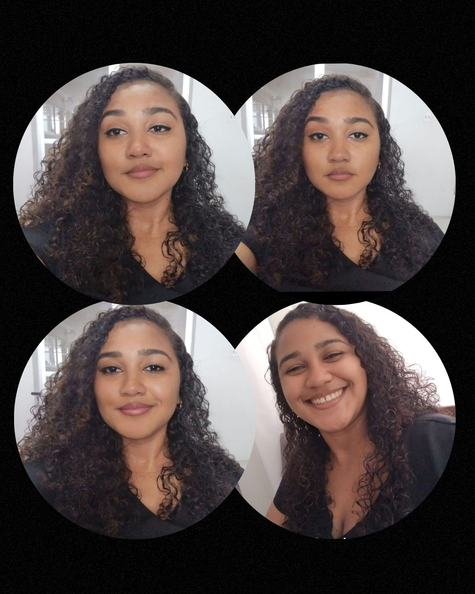

Conheça minha trajetória e qualificações!
Olá! Sou Franciellen Costa, professora de Química e especialista em Ciências da Natureza e o Mundo do Trabalho. Tenho mais de 10 anos de experiência no ensino de reforço escolar e pré-vestibular. Atualmente, estou estudando Desenvolvimento Front-end, com foco em React, HTML e CSS. Busco unir educação e tecnologia para criar soluções inovadoras. Vamos conversar?
